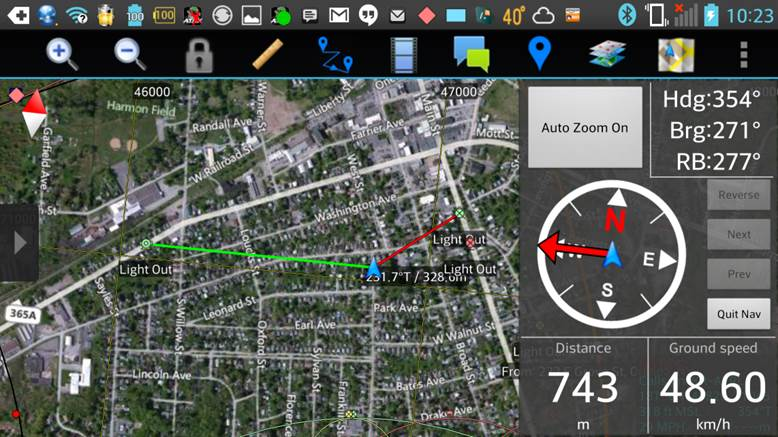

Over the current summer, Dr. Wang along with graduate student Teague Forren and undergraduate student Michael Guerrero focuses on ______ with ATAK. Android Tactical Assualt Kit, also known as ATAK, is cutting edge tecnology that allows its users to withdraw a plethora of information about there location through their phone. A typical ATAK screen will look like such:
As you can see ATAK displays the users location along with other useful information. This technology has been heavily funded by the military for if soilders had this technology on the ground it would give them an advantage against the enemy.
To be continued...